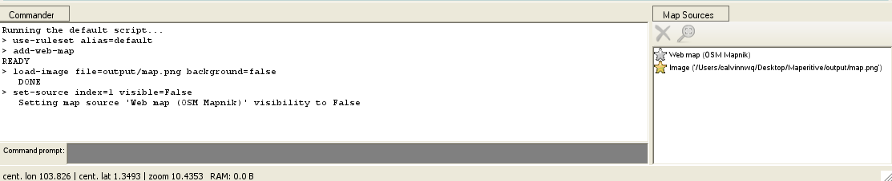

Maperitive
Creating custom map tiles for bounded areas
by Calvin Ng / @calvinnwq
Background
I've created an app which utilises Twitter's Streaming API to retrieve real time tweets with geolocation and plot them onto a map using leaflet.js.
...
Then came the requirement
...
custom designed map
What next?
Having no clue, I did what any of you would
...
{kind=link}
Maperitive
This presentation will go through the solution I stuck with after a couple others that I've tried
...
So let's begin!
1. Maperitive
“Maperitive is a FREE desktop application for drawing maps based on OpenStreetMap and GPS data. You can define what gets on the map and how it is painted. You can also export these maps into bitmaps and SVG files and print them.”
System Requirements
Windows: XP SP3 or later with Microsoft.NET 4 installed. Linux & Mac: latest Mono installed.
What can I do with Maperitive?
- Make maps with custom content and style
- Render relief contours, hillshading, hypsometric tinting
- Exporting maps to bitmaps or SVG files
- Make map tiles for the web
- Automating mapmaking through scripts, Python and Maperitive command-line console
Maperitive Links
2. Starting Up Maperitive
Opening up Maperitive on Windows / Mac / Linux
Windows
Ensure XP SP3 or later with Microsoft.NET 4 installed and simply run Maperitive.exe
Mac / Linux
Ensure Mono is installed and assuming Maperitive is extracted to Desktop, run the following:
$ sh ~/Desktop/Maperitive/Maperitive.sh
Screenshot
{kind=link}
Interface

3. Geo Bounding Box
Retrieving geo coordinates and setting up geo bounds
Considerations?
- Are there any specific countries? (e.g. Singapore)
- What are the zoom levels to consider?
- Is the map fixed or interactive?
Online Tools
Bounding Box
Select an area and select "CSV" as type of data
{kind=link}
4. Exporting Bitmap
Exporting PNG for custom designing
Setting Bounding Box
set-geo-bounds 103.406067,1.090327,104.246521,1.607913
{kind=link}
Zoom to Bounds
zoom-bounds
Export Bitmap
export-bitmap zoom=12
{kind=link}
Export Bitmap
2 files will be generated in output folder:
- output.png
- output.png.georef (required for later steps)
5. Editing Custom Map
Designing of custom map and constraints
Constraints?
- output.png should be the template to work upon.
- Custom designed map (let's call it map.png) should retain exact dimensions as output.png
- Multiple layers to show terrain / roads / etc.?
Sample Custom Map
For the sake of this presentation, here is a sample map I've made which I will name map.png
6. Loading Custom Map
Load custom edited map in Maperitive
Custom Map Files
Using map.png from our previous example, we will also need to create a copy of output.png.georef and rename that to map.png.georef
{kind=link}
Load Image in Maperitive
Assuming we put map.png and map.png.georef back into the output folder:
load-image file=output/map.png background=false
{kind=link}
Disable Other Maps
You can choose to disable underlying maps like the default Web map (OSM Mapnik) so they don't get generated by simply clicking on the yellow star under the Map Sources at the bottom right
{kind=link}
7. Generate Tiles
Generating tiles for specific zoom levels
Generate Tiles
For this example we will generate tiles for 2 zoom levels (11 & 12) for the bounding box we have.
generate-tiles minzoom=11 maxzoom=12 bounds=103.406067,1.090327,104.246521,1.607913
{kind=link}
Generated tiles can be found in the Tiles folder
Tiles Folder
{kind=link}
8. Map Tiles
How to use them
Hosting them
Copy the folders to your project directory. In the example to follow, I've placed them in my assets folder of this presentation with path assets/tiles/
Referencing them in code
Referencing them is as simple as using the following URL:
var tile_url =
"http://calvinnwq.github.io/maperitive-presentation/assets/tiles/{z}/{x}/{y}.png";
Example Code
In this example, I will make use of leaflet.js.
// create bounds
var bounds = new L.LatLngBounds(
new L.LatLng(1.090327, 103.406067)
, new L.LatLng(1.607913, 104.246521)
);
// create a map in the "map" div, set the view to a given place and zoom
var map = L.map('map', {
"center" : [1.335, 103.820]
, "zoom" : 11
, "minZoom" : 11
, "maxZoom" : 12
, "maxBounds" : bounds
});
// add an OpenStreetMap tile layer
L.tileLayer('http://calvinnwq.github.io/maperitive-presentation/assets/tiles/{z}/{x}/{y}.png', {
attribution: "Calvin's custom map design"
, minZoom: 11
, maxZoom: 12
}).addTo(map);
Example Result
Summary
What did we learn today?
Maperitive Summary
Steps Summary
Fin ~
Thank you for your attention